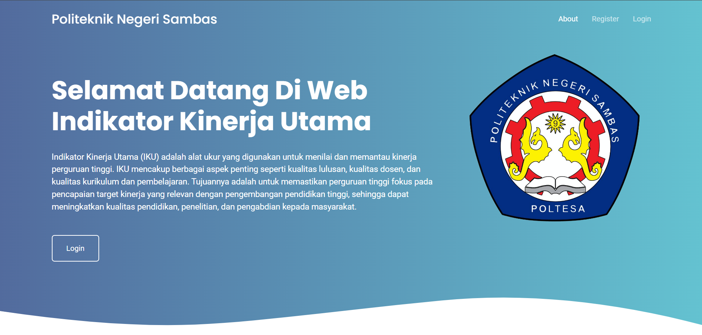
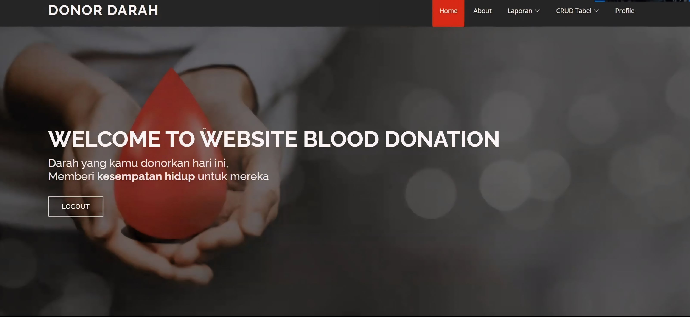
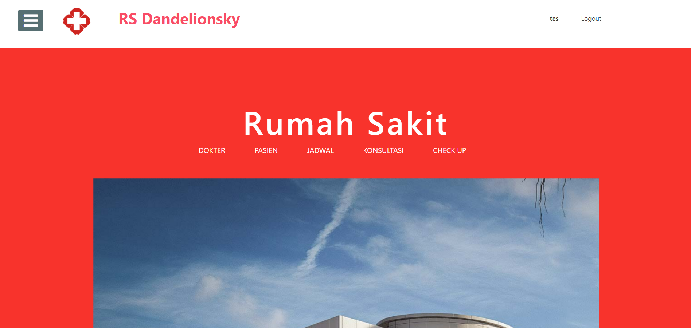
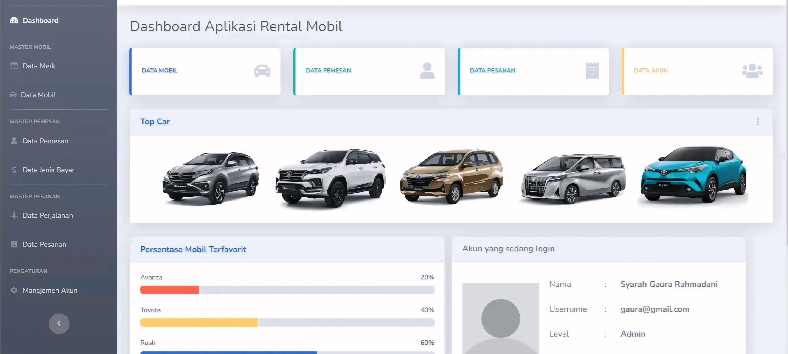

Projects

key performance indicators
Key Performance Indicators website to monitor and measure performance at Sambas State Polytechnic.

Blood Donation Website
This blood donation website aims to simplify the blood donor registration process and increase public awareness.

Hospital Management System
Hospital management system that supports patient, doctor and check-up schedule management.

Rental Car
Car rental application website for managing customer, car and booking data.